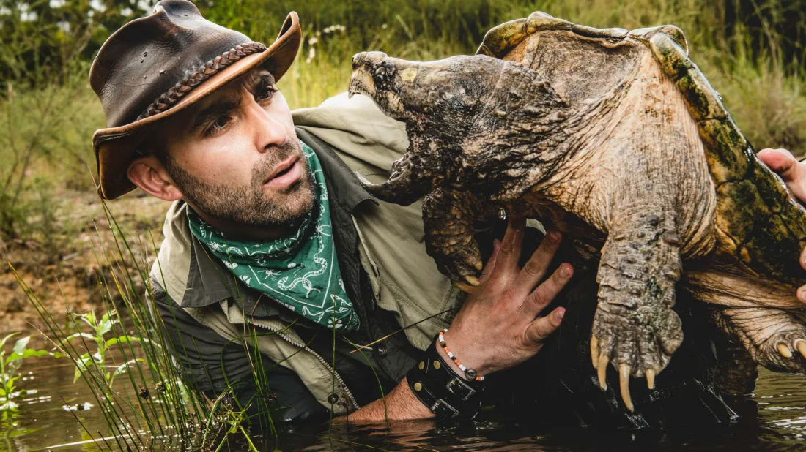
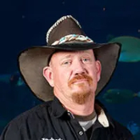
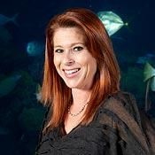

Animal Planet
Welcome
to our page
Learn more
We Document
Wild Animals
What we do Story about us
Animal Planet is an American multinational pay television channel owned by Discovery, Inc. First established on June 1, 1996[1], the network is primarily devoted to series and documentaries about wild animals and domestic pets.[2] The channel was originally a joint venture with BBC Worldwide, and favored educational programming such as nature documentaries. Since its initial launch, the channel's target demographics animal lovers; which are children and family audiences during morning and daytime, and for mature audiences during primetime and late night. In 2008 Animal Planet adopted a more mature programming direction, with an emphasis on aggressive and predatory portrayals of animals.
82746
Animals Documented
2
Kid Shows
4
Adult Shows
6
Awards
224
members
We work with Amazing Services
Photography
Photography is the science, art and practice of creating durable images by recording light or other electromagnetic radiation
Digital
With digital signals, system noise, provided it is not too great, will not change the quantification whereas with signals handled using analog processing.
Creativity
Creativity is a phenomenon whereby something new and somehow valuable is formed. The created item may be intangible or a physical object.
Animal Planet We love animals
Service what we do
Animal Planet was launched on June 1, 1996; it was created by Discovery Communications in cooperation with BBC Worldwide. On January 1, 1997, Animal Planet's distribution grew as a result of Advance Entertainment Corporation selling the satellite transponder slot belonging to the WWOR EMI Service (a national superstation feed of Secaucus, New Jersey/New York City's WWOR-TV, that was implemented following the 1989 passage of the Syndication Exclusivity Rights Rule by the Federal Communications Commission) to Discovery Communications, replacing the feed with Animal Planet outright.

The magazine began to feature some pages of color photography in the early 1930s, when this technology was still in its early development. During the mid-1930s, Luis Marden (1913–2003), a writer and photographer for National Geographic, convinced the magazine to allow its photographers to use the so-called "miniature" 35 mm Leica cameras loaded with Kodachrome film over bulkier cameras with heavy glass plates that required the use of tripods.[17] In 1959, the magazine started publishing small photographs on its covers, later becoming larger photographs
During the Cold War, the magazine committed itself to presenting a balanced view of the physical and human geography of nations beyond the Iron Curtain. The magazine printed articles on Berlin, de-occupied Austria, the Soviet Union, and Communist China that deliberately downplayed politics to focus on culture. In its coverage of the Space Race, National Geographic focused on the scientific achievement while largely avoiding reference to the race's connection to nuclear arms buildup. There were also many articles in the 1930s, 1940s and 1950s about the individual states and their resources, along with supplement maps of each state. Many of these articles were written by longtime staff such as Frederick Simpich.[15] There were also articles about biology and science topics.
What we do some of our work
The channel was originally a joint venture with BBC Worldwide, and favored educational programming such as nature documentaries. Since its initial launch, the channel's target demographics animal lovers; which are children and family audiences during morning and daytime, and for mature audiences during primetime and late night. In 2008 Animal Planet adopted a more mature programming direction, with an emphasis on aggressive and predatory portrayals of animals, as well as an increase in reality programs following personalities involved in animal-related occupations and investigations. Animal Planet rebranded again in October 2018, shifting back towards a more family-oriented direction, despite still airing some mature programs.
{kind=link}
{kind=link}
{kind=link}
{kind=link}
{kind=link}
{kind=link}
{kind=link}
-
"Agnes is responsible day-to-day for handling incoming calls and coordinating with designers to estimate job costs and create quotes so that ATM can bid on jobs. Wayde and Brett consider her a kid sister, but her role coordinating some of their biggest projects is no small matter."
Agnes Wilczynski -

"Robert "Robbie Redneck" Christlieb has a tenacious and sometimes stubborn personality. After working at an acrylic company in Colorado, he decided to move to Las Vegas. Desiring to continue in his field, he ran across ATM and called Wayde to see if he was hiring. That was 14 years ago. It was a perfect match, and he truly couldn't picture himself anywhere else."
Robert "Robbie Redneck" Christlieb -

"It would be great if all Heather King had to handle at ATM was the books. But working alongside her father, brother and husband in one office every day is a little more than an average day job; it's clearly a labor of love. Heather is the absolute love of Wayde's life and handles all the accounting at ATM. Seeing Wayde in his glory doing what he is most passionate about makes the struggles of mixing business with pleasure well worth it. Heather knew a lot about accounting when she started, having run her father's machinery business for a few years, but she was in the deep end when it came to fish."
Heather King
Animal Planet What people say about us

Gressa Miller
I love the show and appreciate the work that animal planet crew puts in.

Nick Karvounis
Its a wonderful documentary so accurate i recommend to all animal lovers out there.

Jaelynn Castillo
Just a wonderful show.

Mike Petrucci
I love wild life and this show helps me learn so much about it.